色の付いた枠のコードの、右上の「コピー」ボタンを押してください。コピーしたら、PDF を見ていた画面に戻ります（ブラウザーで PDF を見ていた時は「戻る」、VS Code で見ていた時は VS Code の窓に切り替えます）。
前編で作ったサーバー（Django の API と承認の画面）に、React の画面をつなぎます。
練習のコードは samples/06_django_react/frontend/ にあります。この巻の画面の写しは、ビルドした物を waitress（会社のサーバーと同じ）で動かし、Chrome で、依頼を出すところから完了までを実際に操作して撮った物です。
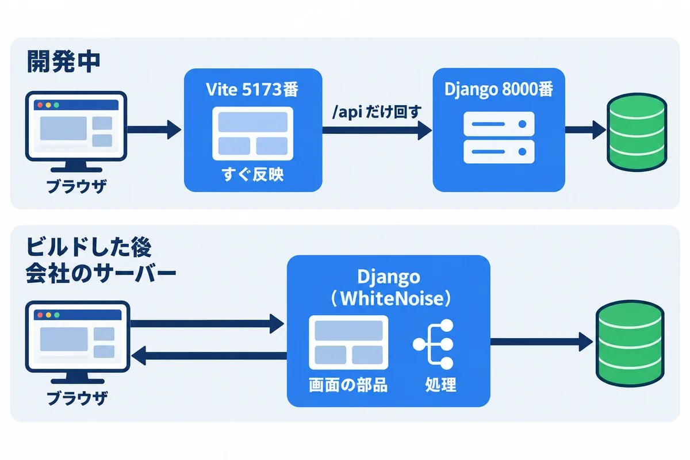
| 開発中 | ビルドした後（会社のサーバーと同じ） | |
|---|---|---|
| 開く URL | http://localhost:5173/ |
http://127.0.0.1:8000/（会社では http://webapp.example.local/） |
| 画面を出すのは | Vite（直すとすぐ反映） | Django の WhiteNoise（/static/…） |
API（/api/…）は |
Vite が Django へ回す（vite.config.ts の proxy） |
Django がそのまま答える |
| 動かし方 | 窓を 2 つ開いて、.\dev.ps1 runserver と npm run dev |
npm run build の後、.\dev_serve.ps1 |
frontend/vite.config.ts:
import { defineConfig } from "vite";
import react from "@vitejs/plugin-react";
export default defineConfig({
plugins: [react()],
// 成果物は Django の /static/ から配られる（onprem の 05 の 6.5）
base: "/static/",
build: {
// 成果物を Django のプロジェクトの中（backend/frontend_dist）に書き出す
outDir: "../backend/frontend_dist",
emptyOutDir: true,
},
server: {
// 開発中だけ: API と承認の画面は、Django の開発用のサーバーへ回す
proxy: {
"/api": "http://127.0.0.1:8000",
"/approve": "http://127.0.0.1:8000",
},
},
});
▶ ここで初めて出てくるコード
defineConfig()（JavaScript・TypeScript）:defineConfig({ … })は、設定ファイル（Vite のvite.configや Playwright のplaywright.config）で、設定を書くための関数です。書き間違いを、エディターが教えてくれるようになります。react()（React）:react()は、Vite に、React（JSX）のファイルを扱えるようにする部品（プラグイン）です。
▶ 準備: 00 の 6.3（Node.js）。前編のサーバー側（Django）が動いていること。npm が「スクリプトの実行が無効」で止められたら、npm.cmd と打ちます（00 の 6.3）。
# 窓 1: サーバー（前編）
cd webapp_learning\samples\06_django_react\backend
.\dev.ps1 runserver
# 窓 2: 画面
cd webapp_learning\samples\06_django_react\frontend
npm install
npm run dev # http://localhost:5173/ を開く
cd webapp_learning\samples\06_django_react\frontend
npm run build # 型を確かめてから、backend\frontend_dist に成果物を書き出す
cd ..\backend
.\dev_serve.ps1 # 部品を集めて（collectstatic）、waitress で動かす → http://127.0.0.1:8000/
▶ ここで初めて出てくるコード
.\dev_serve.ps1（PowerShell）: 今いるフォルダのdev_serve.ps1（静的ファイルを集めてから、waitress でアプリを動かすスクリプト）を動かす書き方。
backend/dev_serve.ps1（「UTF-8 (BOM 付き)」で保存）:
# 会社のサーバーと同じ形（waitress・DEBUG なし・WhiteNoise が画面の部品を配る）で、手元で動かして確かめる
# （必ず「UTF-8 (BOM 付き)」で保存する）
# 使い方: .\dev_serve.ps1 → http://127.0.0.1:8000/ を開く。止めるときは Ctrl+C
$ErrorActionPreference = "Stop"
$names = @()
foreach ($line in Get-Content (Join-Path $PSScriptRoot "dev.env") -Encoding UTF8) {
if ($line -match '^\s*#' -or $line -notmatch '=') { continue }
$name, $value = $line -split '=', 2
Set-Item -Path "Env:$($name.Trim())" -Value $value.Trim()
$names += $name.Trim()
}
$env:DJANGO_DEBUG = "false" # 本番と同じ
$names += "DJANGO_DEBUG"
Push-Location $PSScriptRoot
try {
$python = "$PSScriptRoot\.venv\Scripts\python.exe"
& $python manage.py collectstatic --noinput # 画面の部品を staticfiles に集める
# onprem の 05 の 9.2 の XML の arguments と同じ（ポートだけ 8000）
# 行末の ` は「次の行へ続く」という印（長い 1 行を 2 行に分けて書く）
& $python -m waitress --listen=127.0.0.1:8000 --threads=8 `
--trusted-proxy=127.0.0.1 --trusted-proxy-headers=x-forwarded-for config.wsgi:application
} finally {
foreach ($n in $names) { Remove-Item -Path "Env:$n" -ErrorAction SilentlyContinue }
Pop-Location
}
▶ ここで初めて出てくるコード
$env:名前（PowerShell）:$env:GREETINGのように$env:を付けた名前は「環境変数」（プログラムに外から渡す設定）です。$env:GREETING = "おはよう"で設定すると、その PowerShell の窓から動かすプログラム（cargo runなど）が読めます。窓を閉じると消えます。`（PowerShell）: 行の最後の`（バッククォート。Shift＋@で打ちます）は、「次の行へ続く」という印です。長いコマンドを、何行かに分けて書けます。`の後ろに空白があると続かないので、注意します。
確かめること: http://127.0.0.1:8000/health が {"status": "ok"} を返すこと。画面の部品（/static/assets/index-（指紋）.js）の返事に、Cache-Control: max-age=315360000, public, immutable が付くこと（試した結果、付いた。onprem の 05 の 8.4 と同じ）。
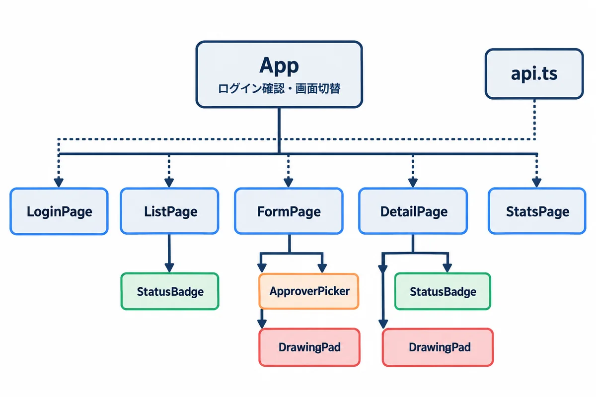
frontend\src\
├─ main.tsx React を HTML に入れる（03 と同じ）
├─ App.tsx ログインの確かめと、画面の切りかえ
├─ api.ts サーバーとの窓口（全部の API の呼び方）
├─ types.ts サーバーとやり取りする物の形
├─ style.css 01 の CSS ＋ 足した物
├─ components\
│ ├─ StatusBadge.tsx 状態の札
│ ├─ DrawingPad.tsx 図面（描く・見る）
│ └─ ApproverPicker.tsx 回覧者を探して選ぶ
└─ pages\
├─ LoginPage.tsx ListPage.tsx FormPage.tsx DetailPage.tsx StatsPage.tsx
frontend/src/api.ts:
// Django の API を呼ぶ。03 の「にせのサーバー」を、本物に置きかえた物
import type { Employee, Me, RequestDetail, RequestInput, RequestRow } from "./types.ts";
/** API が断ったとき。detail はそのまま画面に出せる日本語 */
export class ApiError extends Error {
status: number;
constructor(status: number, message: string) {
super(message);
this.status = status;
}
}
function csrfToken(): string {
const m = document.cookie.match(/(?:^|; )csrftoken=([^;]+)/);
return m ? decodeURIComponent(m[1]) : "";
}
/** DRF のエラーの JSON（{"title": ["…"]} や {"detail": "…"}）を、1 つの文にする */
function messageOf(data: unknown, status: number): string {
if (data && typeof data === "object") {
const values = Object.values(data as Record<string, unknown>).flat();
if (values.length > 0) return values.map(String).join(" ");
}
return `エラー ${status}`;
}
async function call<T>(path: string, init: RequestInit = {}): Promise<T> {
const method = init.method ?? "GET";
const headers: Record<string, string> = method === "GET" ? {} : { "X-CSRFToken": csrfToken() };
if (init.body && !(init.body instanceof FormData)) headers["Content-Type"] = "application/json";
const res = await fetch(path, { ...init, method, headers, credentials: "same-origin" });
if (res.status === 204) return undefined as T;
const data = await res.json().catch(() => ({}));
if (!res.ok) throw new ApiError(res.status, messageOf(data, res.status));
return data as T;
}
const post = <T>(path: string, body?: unknown) =>
call<T>(path, { method: "POST", body: body instanceof FormData ? body : JSON.stringify(body ?? {}) });
export const api = {
csrf: () => call<void>("/api/csrf/"),
me: () => call<Me>("/api/me/"),
login: (employee_no: string, password: string) => post<{ name: string }>("/api/login/", { employee_no, password }),
logout: () => post<{ ok: boolean }>("/api/logout/"),
requests: (mine: boolean) => call<RequestRow[]>(`/api/requests/${mine ? "?mine=1" : ""}`),
request: (id: number) => call<RequestDetail>(`/api/requests/${id}/`),
create: (input: RequestInput) => post<{ id: number }>("/api/requests/", input),
action: (id: number, action: string, input?: RequestInput) => post<{ ok: boolean }>(`/api/requests/${id}/${action}/`, input),
upload: (id: number, file: File) => {
const form = new FormData();
form.append("file", file);
return post<{ id: number }>(`/api/requests/${id}/attachments/`, form);
},
employees: (q: string) => call<Employee[]>(`/api/employees/?q=${encodeURIComponent(q)}`),
stats: () =>
call<{ by_status: { status: string; count: number }[]; done_by_assignee: { name: string; count: number }[] }>("/api/stats/"),
};
▶ ここで初めて出てくるコード
class（TypeScript）: クラス（データと、それを扱うメソッドをまとめた設計図）を作る書き方。class ApiError extends Error { … }。new ApiError(…)で作ります。extends（TypeScript）: クラスを、ほかのクラスを元にして作る書き方。class ApiError extends Errorは、標準のErrorに、statusなどを足したエラーです。this（TypeScript）: クラスの中で「この物自身」を表す言葉。this.status = status;は、自分のstatusに値を入れます。instanceof（TypeScript）: 値が、そのクラスから作られた物かを調べる書き方。body instanceof FormDataは「ファイル付きのフォームの中身か」。.match()（TypeScript）: 文字列が正規表現に合う所を探すメソッド。見つかると、その情報（かっこの中の部分など）を配列で、見つからないとnullを返します。.flat()（TypeScript）: 配列の中の配列を、1 つの配列に平らにするメソッド。.catch()（TypeScript）:Promiseが失敗した時の代わりの処理を登録するメソッド。res.json().catch(() => ({}))は「JSON として読めなければ空のオブジェクト」。.append()（TypeScript）:FormDataに項目を足すメソッド。form.append("file", file)で、ファイル付きのフォームを組み立てます。(?:…)（正規表現）: 正規表現の(?: )は、取り出さないまとまりです。(?:^|; )は「行の頭か、;のどちらか」をまとめるだけで、取り出す番号には数えません。[^…]（正規表現）: 正規表現の[^ ]は、「中に書いた文字以外の 1 文字」を表します。[^;]+は「;以外の文字が 1 つ以上」、[^\x21-\x7E]は「英数字と記号（ASCII の見える文字）以外」。+（正規表現）: 正規表現の+は、「すぐ前の物が、1 回以上くり返す」を表します。\d+は「数字が 1 つ以上」。^（正規表現）: 正規表現の^は、「行（文字）の頭」を表します。^#は「#で始まる」。|（正規表現）: 正規表現の|は、「左か右のどちらか」を表します。api/|admin/は「api/かadmin/」。(…)（正規表現）: 正規表現の( )は、まとまり（グループ）を作ります。合った文字のうち、( )の中の部分だけを、あとから取り出せます（m[1]・m.group(1)・$1など）。(…)?のように、まとまりごとくり返しや省略もできます。Object（JavaScript・TypeScript）:Object.values(obj)は、オブジェクトの値だけを並びにします。Object.keys(obj)はキーだけ、Object.entries(obj)は[キー, 値]の組の並びです。String（JavaScript・TypeScript）:String(値)は、値を文字にします。values.map(String)は、並びの全部を文字にします。RequestInit（TypeScript）:RequestInitは、fetch(URL, 設定)の 2 つ目に渡す「設定」（method・headers・bodyなど）の型です。FormData（JavaScript・TypeScript）:FormDataは、フォームの中身（ファイルも含む）を、送れる形にまとめる入れ物です。fetchのbodyに入れて、ファイルを送ります。decodeURIComponent()（JavaScript・TypeScript）:decodeURIComponent("%E5%B1%B1")は、URL やクッキーの中で%XXの形にした文字を、元の文字（山）に戻します。反対はencodeURIComponent()です。.cookie（JavaScript・TypeScript）:document.cookieは、そのページのクッキーを、名前=値; 名前=値の形の文字で読みます（HttpOnlyのクッキーは読めません）。
api.requests(true) のように呼ぶだけで、URL や CSRF の札のことを知らなくて済みます（前編の services と同じ考え方）。POST には、クッキーの csrftoken を X-CSRFToken という付け札にして付けます（onprem の 05 の 8.2）。/api/csrf/ を呼んで受け取ります（ビルドした後は、index.html を返すときにも渡す）。{"detail": "…"} や {"title": ["…"]}）は、ApiError にして、そのまま画面に出します。サーバー側に足した物（backend/workflow/pages.py）:
"""React の画面（index.html）を返す所と、動いているかの確かめ（/health）"""
from django.http import HttpResponse, JsonResponse
from django.utils.decorators import method_decorator
from django.views.decorators.csrf import ensure_csrf_cookie
from django.views.generic import TemplateView
@method_decorator(ensure_csrf_cookie, name="dispatch")
class IndexView(TemplateView):
"""React の成果物の index.html を返す。CSRF の札（クッキー）もここで渡す"""
template_name = "index.html"
@ensure_csrf_cookie
def csrf(request):
"""開発中（Vite の画面から開いたとき）に、CSRF の札を受け取るための入口"""
return HttpResponse(status=204)
def health(request):
"""動いているかの確かめ（onprem の 06 の check.ps1 が使う）"""
return JsonResponse({"status": "ok"})
▶ ここで初めて出てくるコード
method_decorator()（Django）: 関数用の印（デコレーター）を、クラスの画面（ビュー）のメソッドにも付けられるようにする物。@method_decorator（Django）:@method_decorator(ensure_csrf_cookie, name="dispatch")をクラスの上に付けて、そのクラスの画面に印を付けます。@ensure_csrf_cookie（Django）: その画面を返す時に、CSRF の札（クッキー）を必ず付ける印。React の画面が、あとで送るフォームに札を付けられるようにします（10 巻の 5 章）。HttpResponse（Django）: Django のHttpResponse("文字")は、文字（HTML など）をそのまま返す、いちばん基本の答えです。JsonResponse（Django）: Django のJsonResponse({"status": "ok"})は、辞書を JSON にして返す答えです。TemplateView（Django）: Django のTemplateViewは、決まったテンプレート（HTML）を表示するだけのビューです。template_name = "index.html"を書くだけで使えます。
backend/config/urls.py の最後に、「API・管理画面・部品・承認の画面以外の URL は、React の画面を返す」行を足しました。
re_path(r"^(?!api/|admin/|static/|approve/).*$", pages.IndexView.as_view()),
▶ ここで初めて出てくるコード
.as_view()（Django）: クラスで作った画面（ビュー）を、URL の決まりに登録できる形にするメソッド。re_path()（Django）: 正規表現で URL の決まりを書く関数。re_path(r"^(?!api/|admin/).*$", …)は「api/・admin/で始まらない URL は全部」（React の画面を返す）。(?=…)（正規表現）: 正規表現の(?= )は「この後ろに、こういう形が続く時だけ」、(?! )は「この後ろに、こういう形が続かない時だけ」を表します（先読み）。^(?!api/|admin/).*$は「api/やadmin/で始まらない物、全部」。中の文字は、合わせた文字には入りません。*（正規表現）: 正規表現の*は、「すぐ前の物が、0 回以上くり返す」を表します。\s*は「空白が 0 個以上」、.*は「何でも、何文字でも」。|（正規表現）: 正規表現の|は、「左か右のどちらか」を表します。api/|admin/は「api/かadmin/」。
frontend/src/App.tsx:
import { useCallback, useEffect, useState } from "react";
import { api, ApiError } from "./api.ts";
import { DetailPage } from "./pages/DetailPage.tsx";
import { FormPage } from "./pages/FormPage.tsx";
import { ListPage } from "./pages/ListPage.tsx";
import { LoginPage } from "./pages/LoginPage.tsx";
import { StatsPage } from "./pages/StatsPage.tsx";
import type { Me } from "./types.ts";
type Route =
| { page: "list" }
| { page: "new" }
| { page: "detail"; id: number }
| { page: "edit"; id: number }
| { page: "stats" };
/** URL の # の後ろ（#/requests/5 など）から、出す画面を決める */
function parse(hash: string): Route {
const m = hash.match(/^#\/requests\/(\d+)(\/edit)?$/);
if (m) return m[2] ? { page: "edit", id: Number(m[1]) } : { page: "detail", id: Number(m[1]) };
if (hash === "#/new") return { page: "new" };
if (hash === "#/stats") return { page: "stats" };
return { page: "list" };
}
export function App() {
const [me, setMe] = useState<Me | null | undefined>(undefined); // undefined = 確かめ中、null = ログインしていない
const [route, setRoute] = useState<Route>(parse(location.hash));
const loadMe = useCallback(async () => {
try {
setMe(await api.me());
} catch (e) {
if (e instanceof ApiError && e.status === 403) setMe(null); // ログインしていない（60 分たった、など）
else throw e;
}
}, []);
useEffect(() => {
api.csrf().then(loadMe); // 先に CSRF の札（クッキー）を受け取ってから
const onChange = () => setRoute(parse(location.hash));
window.addEventListener("hashchange", onChange);
return () => window.removeEventListener("hashchange", onChange);
}, [loadMe]);
async function logout() {
await api.logout();
setMe(null);
}
return (
<>
<header className="site-header">
<strong>依頼・承認アプリ</strong>
{me && (
<nav>
<a href="#/">依頼の一覧</a>
<a href="#/new">新しい依頼</a>
<a href="#/stats">グラフ</a>
<span className="who">{me.name} さん</span>
<button className="link light" onClick={logout}>ログアウト</button>
</nav>
)}
</header>
<main>
{me === undefined && <p>読み込み中…</p>}
{me === null && <LoginPage onLogin={loadMe} />}
{me && route.page === "list" && <ListPage me={me} />}
{me && route.page === "new" && <FormPage />}
{me && route.page === "edit" && <FormPage editId={route.id} />}
{me && route.page === "detail" && <DetailPage id={route.id} me={me} />}
{me && route.page === "stats" && <StatsPage />}
</main>
</>
);
}
▶ ここで初めて出てくるコード
.csrf()（練習アプリで作る物（TypeScript））:api.tsで作る関数の 1 つで、/api/csrf/を呼んで、CSRF の札（クッキー）を先に受け取ります。useCallback()（React）: 関数を覚えておき、描き直しのたびに作り直さないようにするフック。useEffectの見張る値に関数を入れる時などに使います。\d（正規表現）: 正規表現の\dは、「数字 1 つ（0〜9）」を表します。\.（正規表現）: 正規表現の\.のように、記号の前に\を付けると、その記号を特別な意味にせず、文字そのものとして表します。\.は.、\/は/です。?（正規表現）: 正規表現の?は、「すぐ前の物が、あっても無くてもよい（0 回か 1 回）」を表します。(\/edit)?は「/editがあってもなくてもよい」。$（正規表現）: 正規表現の$は、「行（文字）の終わり」を表します。\d+$は「数字で終わる」。^…$と両方書くと、「全体がこの形か」を調べられます。async () =>（JavaScript・TypeScript）:async () => { … }は、中でawait（終わるまで待つ）を使える、名前の無い関数（アロー関数）です。Number（JavaScript・TypeScript）:Number("42")は、文字を数にします。数にできない時はNaN（数ではない）になります。
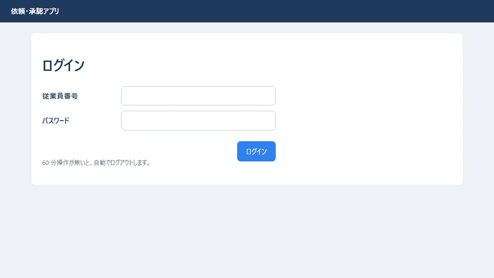
/api/me/ が 403 なら「ログインしていない」として、ログインの画面を出します。60 分たってセッションが切れたときも、同じ動きになります（前編の settings.py の SESSION_COOKIE_AGE）。me が undefined（確かめ中）・null（ログインしていない）・値あり（ログイン中）の 3 つを、型で区別しています。frontend/src/pages/FormPage.tsx:
import { useEffect, useState, type FormEvent } from "react";
import { api } from "../api.ts";
import { ApproverPicker } from "../components/ApproverPicker.tsx";
import { DrawingPad, emptyDrawing } from "../components/DrawingPad.tsx";
import type { Drawing, Employee } from "../types.ts";
const MAX_FILE = 10 * 1024 * 1024;
const OK_EXT = /\.(jpe?g|png|pdf)$/i;
/** 依頼の入力。editId があれば「直して出し直す」 */
export function FormPage({ editId }: { editId?: number }) {
const [title, setTitle] = useState("");
const [detail, setDetail] = useState("");
const [dueDate, setDueDate] = useState("");
const [approvers, setApprovers] = useState<Employee[]>([]);
const [drawing, setDrawing] = useState<Drawing>(emptyDrawing);
const [files, setFiles] = useState<File[]>([]);
const [errors, setErrors] = useState<string[]>([]);
const [sending, setSending] = useState(false);
useEffect(() => {
if (editId === undefined) return;
api.request(editId).then((r) => {
setTitle(r.title);
setDetail(r.detail);
setDueDate(r.due_date);
setDrawing(r.drawing ?? emptyDrawing);
setApprovers(r.steps.map((s) => ({ id: s.approver_id, name: s.approver_name, dept: s.approver_dept, job_title: "" })));
});
}, [editId]);
function validate(): string[] {
const list: string[] = [];
if (!title.trim()) list.push("件名を入れてください。");
if (!dueDate) list.push("希望の納期を入れてください。");
if (approvers.length === 0) list.push("回覧者を 1 人以上選んでください。");
for (const f of files) {
if (!OK_EXT.test(f.name)) list.push(`${f.name}: 添付できるのは JPG・PNG・PDF だけです。`);
if (f.size > MAX_FILE) list.push(`${f.name}: 1 ファイル 10MB までです。`);
}
return list;
}
async function handleSubmit(e: FormEvent<HTMLFormElement>) {
e.preventDefault();
const found = validate();
setErrors(found);
if (found.length > 0) return;
setSending(true);
try {
const input = { title, detail, due_date: dueDate, approver_ids: approvers.map((a) => a.id), drawing };
let id = editId;
if (id === undefined) {
id = (await api.create(input)).id;
} else {
await api.action(id, "resubmit", input);
}
for (const f of files) await api.upload(id, f); // 添付は、依頼を作ってから 1 つずつ送る
location.hash = `#/requests/${id}`;
} catch (err) {
setErrors([err instanceof Error ? err.message : "送れませんでした。"]);
} finally {
setSending(false);
}
}
return (
<form onSubmit={handleSubmit}>
<h1>{editId === undefined ? "依頼の入力" : `依頼 ${editId} を直して出し直す`}</h1>
{errors.length > 0 && <ul className="errors" role="alert">{errors.map((m) => <li key={m}>{m}</li>)}</ul>}
<div className="form-grid">
<label htmlFor="title" className="required">件名</label>
<input id="title" value={title} maxLength={100} onChange={(e) => setTitle(e.target.value)} />
<label htmlFor="detail">内容</label>
<textarea id="detail" rows={3} value={detail} onChange={(e) => setDetail(e.target.value)} />
<label htmlFor="due" className="required">希望の納期</label>
<input id="due" type="date" value={dueDate} onChange={(e) => setDueDate(e.target.value)} />
<label className="required">回覧者</label>
<ApproverPicker value={approvers} onChange={setApprovers} />
<label htmlFor="files">添付ファイル</label>
<input id="files" type="file" multiple accept=".jpg,.jpeg,.png,.pdf" onChange={(e) => setFiles([...(e.target.files ?? [])])} />
</div>
<h2>図面（ドラッグで四角を描く）</h2>
<DrawingPad value={drawing} onChange={setDrawing} />
<div className="actions">
<button type="button" className="btn-secondary" onClick={() => setDrawing(emptyDrawing)}>図面を消す</button>
<button type="submit" className="btn-primary" disabled={sending}>{sending ? "送っています…" : "依頼を送る"}</button>
</div>
</form>
);
}
▶ ここで初めて出てくるコード
.request()（練習アプリで作る物（TypeScript））:api.tsで作る関数の 1 つで、依頼 1 件のくわしい中身を問い合わせます。.test()（TypeScript）: 正規表現が、文字列に合うかをtrue・falseで返すメソッド。/\.(jpe?g|png|pdf)$/i.test(名前)は「拡張子が JPG・PNG・PDF か」。.create()（練習アプリで作る物（TypeScript））:api.tsで作る関数の 1 つで、新しい依頼を送って作ります。作った依頼の番号（id）が返ります。.upload()（練習アプリで作る物（TypeScript））:api.tsで作る関数の 1 つで、添付ファイルを 1 つ送ります。/…/g（JavaScript・TypeScript）: 正規表現の後ろのgは、「合う所を全部」という指定（フラグ）です。.replace(/a/g, "b")は、全部のaをbにします（gが無いと、最初の 1 つだけ）。iは大文字・小文字を区別しない指定です。maxLength=（React）: JSX のmaxLength={100}は、入力できる文字の数の上限です（HTML のmaxlength）。accept=（React）:accept=".jpg,.jpeg,.png,.pdf"は、選べるファイルの種類です（サーバー側でも必ず確かめます）。
frontend/src/components/ApproverPicker.tsx:
import { useEffect, useState } from "react";
import { api } from "../api.ts";
import type { Employee } from "../types.ts";
type Props = { value: Employee[]; onChange: (list: Employee[]) => void; max?: number };
/** 回覧者を、氏名・所属・役職で探して、順番に 3 人まで選ぶ */
export function ApproverPicker({ value, onChange, max = 3 }: Props) {
const [q, setQ] = useState("");
const [found, setFound] = useState<Employee[]>([]);
useEffect(() => {
// 打つたびにすぐ呼ばず、0.3 秒止まってから探す（サーバーにお願いしすぎない）
const timer = setTimeout(() => {
api.employees(q).then(setFound).catch(() => setFound([]));
}, 300);
return () => clearTimeout(timer);
}, [q]);
const chosenIds = new Set(value.map((e) => e.id));
return (
<div className="picker">
<ol className="chosen">
{value.map((e, i) => (
<li key={e.id}>
回覧者{i + 1}: {e.name}（{e.dept} {e.job_title}）
<button type="button" className="link" onClick={() => onChange(value.filter((x) => x.id !== e.id))}>外す</button>
</li>
))}
{value.length === 0 && <li className="hint">まだ選んでいません（1〜{max} 人）</li>}
</ol>
{value.length < max && (
<>
<input placeholder="氏名・所属・役職で探す" value={q} onChange={(e) => setQ(e.target.value)} aria-label="回覧者を探す" />
<ul className="found">
{found.filter((e) => !chosenIds.has(e.id)).slice(0, 5).map((e) => (
<li key={e.id}>
<button type="button" className="link" onClick={() => onChange([...value, e])}>
＋ {e.name}（{e.dept} {e.job_title}）
</button>
</li>
))}
</ul>
</>
)}
</div>
);
}
▶ ここで初めて出てくるコード
.has()（TypeScript）:SetやMapに、その値（キー）があればtrueを返すメソッド。.slice()（TypeScript）: 配列や文字列の一部分を切り出した、新しい物を返すメソッド。list.slice(0, 5)は最初の 5 つ。<ol>（React）: 番号の付いた並びのタグ。中に<li>を並べます（回覧の順番など）。setTimeout()（JavaScript・TypeScript）:setTimeout(() => { … }, 3000)は、3000 ミリ秒（3 秒）たってから、中の処理を 1 回動かします。返ってくる番号をclearTimeout(番号)に渡すと、取りやめにできます。clearTimeout()（JavaScript・TypeScript）:clearTimeout(timer)は、setTimeoutで予約した処理を取りやめにします。React では、部品が消える時の後片づけ（useEffectのreturn () => …）で呼びます。
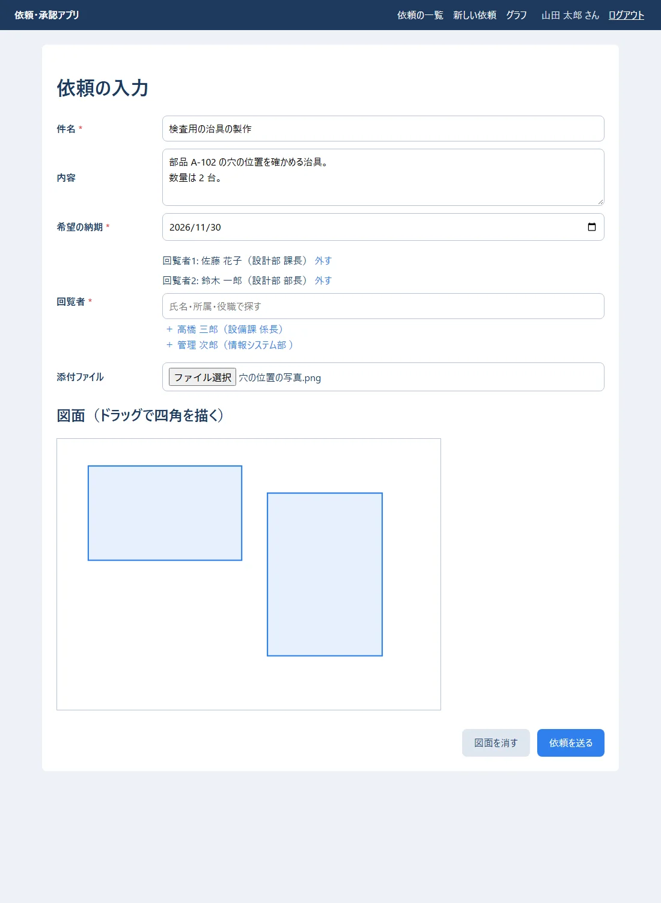
「依頼を送る」を押すと、依頼が作られ、そのあと添付ファイルが送られて、詳細の画面に移ります。
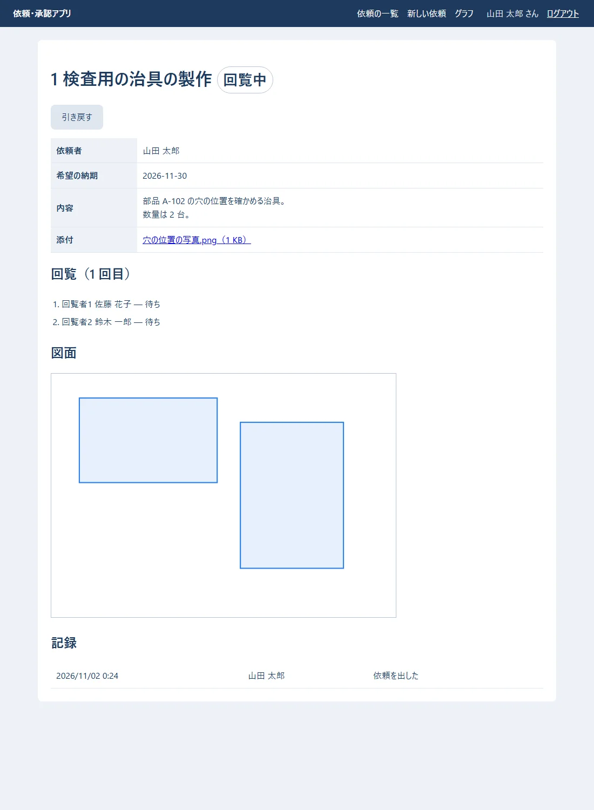
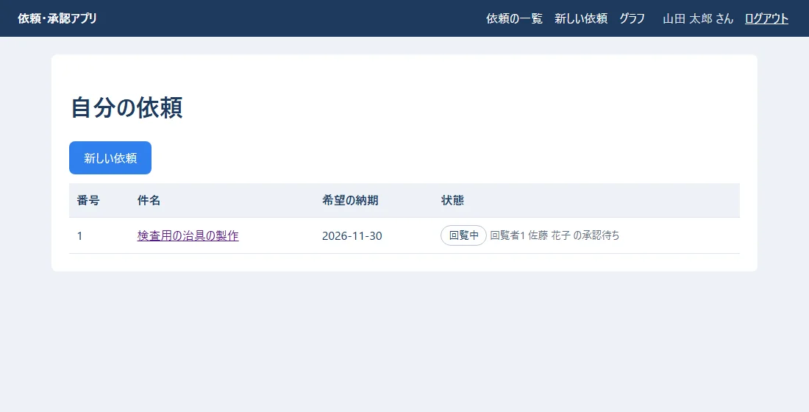
setTimeout と、useEffect の片付けの clearTimeout）。1 文字打つたびにサーバーにお願いしないためです。frontend/src/pages/DetailPage.tsx:
import { useCallback, useEffect, useState } from "react";
import { api } from "../api.ts";
import { DrawingPad } from "../components/DrawingPad.tsx";
import { StatusBadge } from "../components/StatusBadge.tsx";
import type { Me, RequestDetail } from "../types.ts";
const time = (s: string | null) => (s ? new Date(s).toLocaleString("ja-JP", { dateStyle: "short", timeStyle: "short" }) : "");
/** 依頼の詳細。回覧の進み具合・差し戻しのコメント・添付・記録と、今できる操作のボタン */
export function DetailPage({ id, me }: { id: number; me: Me }) {
const [r, setR] = useState<RequestDetail | null>(null);
const [message, setMessage] = useState("");
const load = useCallback(() => api.request(id).then(setR).catch((e: Error) => setMessage(e.message)), [id]);
useEffect(() => { load(); }, [load]);
async function run(action: string, done: string) {
try {
await api.action(id, action);
setMessage(done);
await load();
} catch (e) {
setMessage(e instanceof Error ? e.message : "できませんでした。");
}
}
if (r === null) return <p>{message || "読み込み中…"}</p>;
const mine = r.requester_name === me.name;
const editable = mine && (r.status === "returned" || r.status === "pulled_back");
return (
<section>
<h1>{r.id} {r.title} <StatusBadge status={r.status} label={r.status_label} /></h1>
{message && <p className="message">{message}</p>}
<div className="actions left">
{mine && r.status === "circulating" && (
<button className="btn-secondary" onClick={() => run("pull-back", "引き戻しました。")}>
引き戻す
</button>
)}
{editable && <a className="btn-primary" href={`#/requests/${r.id}/edit`}>直して出し直す</a>}
{editable && <button className="btn-secondary" onClick={() => run("withdraw", "取り下げました。")}>取り下げる</button>}
{me.role !== "member" && r.status === "approved" && (
<button className="btn-primary" onClick={() => run("assign", "担当になりました。")}>
担当になる
</button>
)}
{r.status === "in_progress" && r.assignee_name === me.name && (
<button className="btn-primary" onClick={() => run("complete", "完了にしました。")}>
完了にする
</button>
)}
</div>
<table className="kv">
<tbody>
<tr><th>依頼者</th><td>{r.requester_name}</td></tr>
<tr><th>希望の納期</th><td>{r.due_date}</td></tr>
<tr><th>内容</th><td className="pre">{r.detail}</td></tr>
{r.assignee_name && <tr><th>担当者</th><td>{r.assignee_name}</td></tr>}
{r.return_comments && <tr><th>差し戻しのコメント</th><td className="pre">{r.return_comments}</td></tr>}
<tr><th>添付</th><td>{r.attachments.length === 0 ? "なし" : r.attachments.map((a) => (
<a key={a.id} className="file" href={`/api/attachments/${a.id}/`}>{a.original_name}（{Math.ceil(a.size / 1024)} KB）</a>
))}</td></tr>
</tbody>
</table>
<h2>回覧（{r.round} 回目）</h2>
<ol className="steps">
{r.steps.map((s) => (
<li key={s.order} className={`step-${s.decision}`}>
回覧者{s.order} {s.approver_name} — {s.decision_label} {time(s.decided_at)}
</li>
))}
</ol>
{r.drawing && r.drawing.shapes.length > 0 && (<><h2>図面</h2><DrawingPad value={r.drawing} /></>)}
<h2>記録</h2>
<table>
<tbody>
{r.histories.map((h, i) => (
<tr key={i}><td>{time(h.at)}</td><td>{h.actor_name}</td><td>{h.action}</td><td>{h.note}</td></tr>
))}
</tbody>
</table>
</section>
);
}
▶ ここで初めて出てくるコード
.toLocaleString()（TypeScript）: 日時や数を、その国の書き方の文字列にするメソッド。new Date(s).toLocaleString("ja-JP", { dateStyle: "short", timeStyle: "short" })は2026/11/02 8:00の形です。.ceil()（TypeScript）:Math.ceil(x)は、小数を切り上げて整数にする関数です（大きさを KB で見せる時など）。Date（JavaScript・TypeScript）:new Date(文字)は、日時の値を作ります。.toLocaleString("ja-JP")で、日本の形の日時の文字になります。
今できる操作のボタンだけを出します。たとえば「引き戻す」は、自分の依頼が回覧中のときだけです。ただし、ボタンを出さないのは使う人のためのお手伝いで、できるかどうかを最後に決めるのはサーバー（前編の services）です。
2 人目の鈴木さんが、メールの URL から差し戻すと（前編の 6.2）、依頼した山田さんの画面は次のようになります。
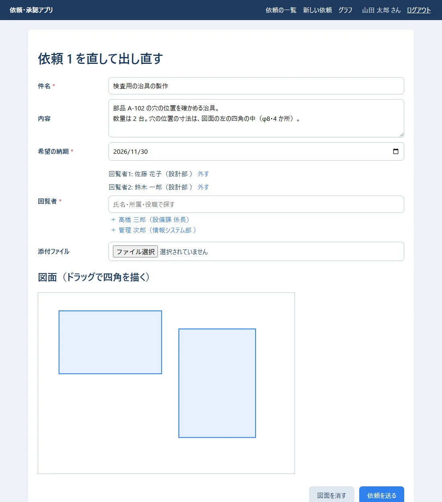
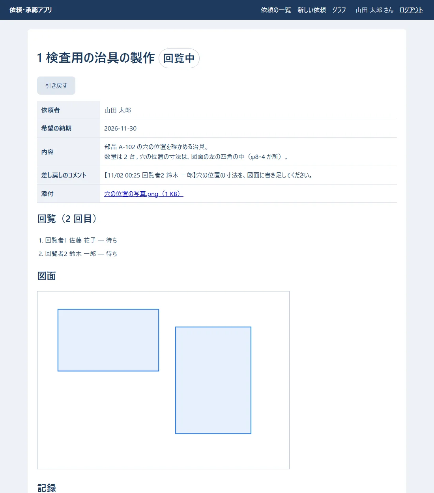
2 回目の回覧で 2 人が承認すると「回覧完了」になり、担当者（設備課の高橋さん）にメールが届きます。高橋さんがログインして「すべての依頼を見る」にすると:
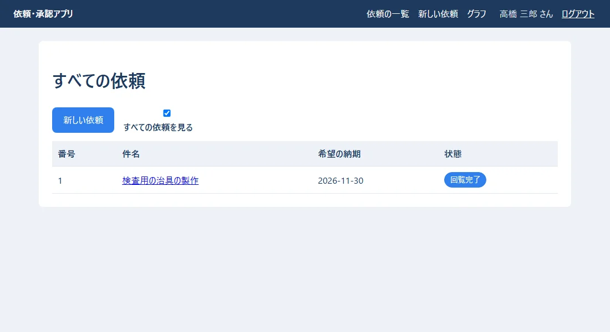
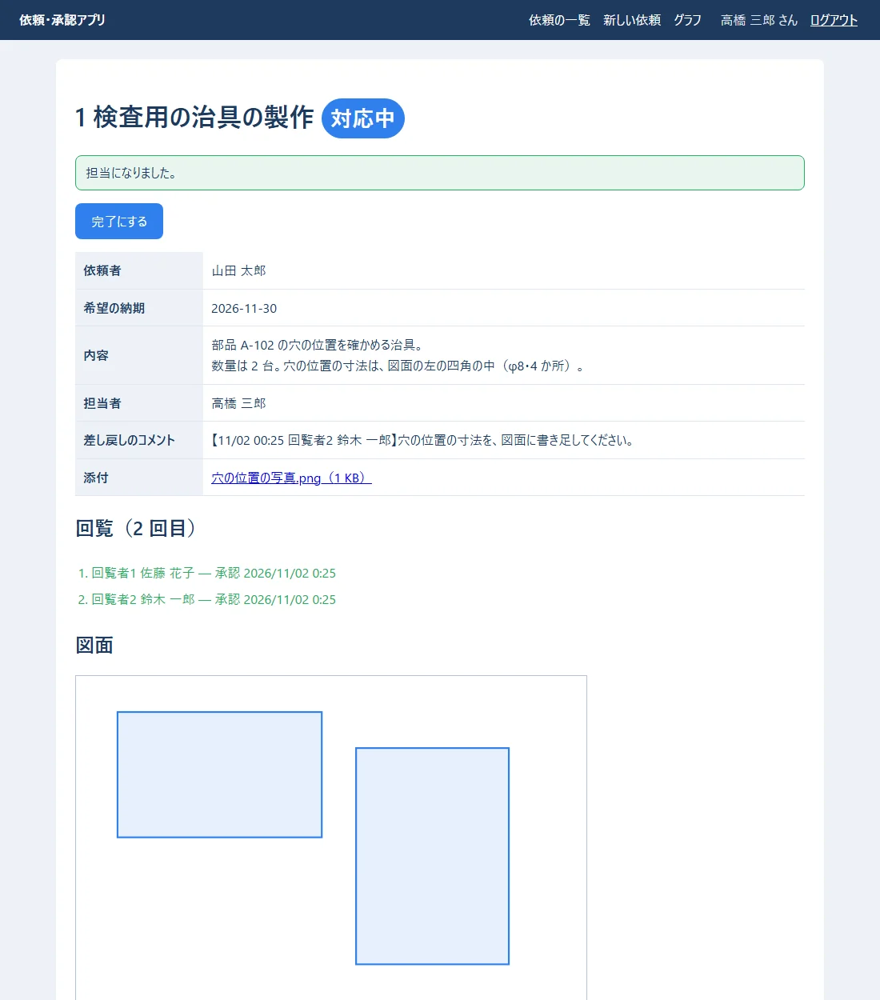
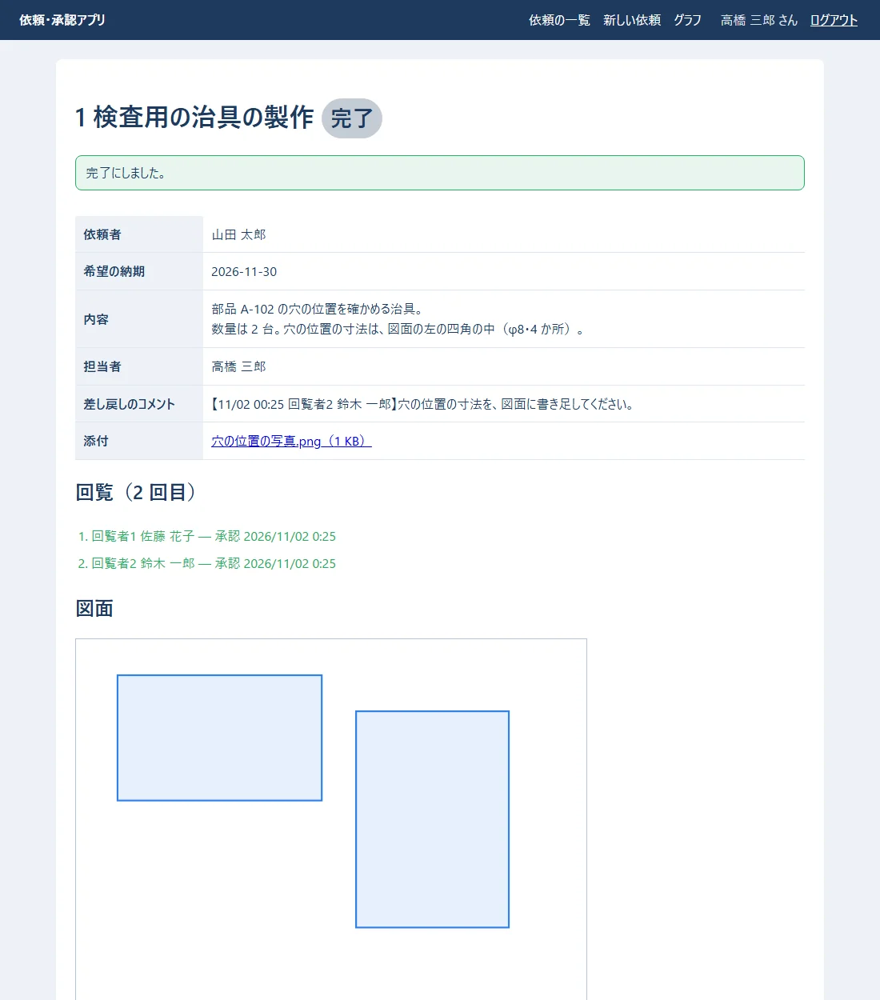
frontend/src/pages/StatsPage.tsx:
import { useEffect, useState } from "react";
import { api } from "../api.ts";
type Bar = { label: string; count: number };
/** 横向きの棒グラフ（部品を使わず、SVG で描く） */
function BarChart({ title, bars }: { title: string; bars: Bar[] }) {
const max = Math.max(1, ...bars.map((b) => b.count));
const rowH = 32;
return (
<figure className="chart">
<figcaption>{title}</figcaption>
<svg viewBox={`0 0 600 ${bars.length * rowH + 10}`} role="img" aria-label={title}>
{bars.map((b, i) => (
<g key={b.label} transform={`translate(0 ${i * rowH + 5})`}>
<text x="110" y="18" textAnchor="end" className="axis">{b.label}</text>
<rect x="120" y="4" height="20" rx="4" width={(b.count / max) * 420} className="bar" />
<text x={128 + (b.count / max) * 420} y="19" className="value">{b.count} 件</text>
</g>
))}
</svg>
</figure>
);
}
export function StatsPage() {
const [data, setData] = useState<{ byStatus: Bar[]; byAssignee: Bar[] } | null>(null);
useEffect(() => {
api.stats().then((s) =>
setData({
byStatus: s.by_status.map((x) => ({ label: x.status, count: x.count })),
byAssignee: s.done_by_assignee.map((x) => ({ label: x.name, count: x.count })),
}),
);
}, []);
if (data === null) return <p>読み込み中…</p>;
return (
<section>
<h1>グラフ</h1>
<BarChart title="状態ごとの依頼の件数" bars={data.byStatus} />
<BarChart title="担当者ごとの完了の件数" bars={data.byAssignee} />
</section>
);
}
▶ ここで初めて出てくるコード
.stats()（練習アプリで作る物（TypeScript））:api.tsで作る関数の 1 つで、集計（状態ごとの数など）を問い合わせます。<figure>（React）: 図と、その説明をひとまとめにするタグ。<figcaption>（React）:<figure>の中の、図の説明のタグ。<g>（React）: SVG の中で、図の部品をまとめるタグ（group）。まとめて動かしたり、色を付けたりできます。<text>（HTML）: SVG（線や図形で描く絵）の中に、文字を書くタグ。<text x="110" y="18" textAnchor="end">ラベル</text>は、決めた位置に、右そろえで文字を書きます。transform=（React）: SVG のtransform="translate(0 30)"は、図形を動かす（ずらす）指定です。textAnchor=（React）: SVG のtextAnchor="end"は、文字を、置いた位置に右端をそろえて書く指定です（middleで真ん中）。rx=（React）: SVG の<rect rx="4">のrxは、四角の角を丸くする大きさです。
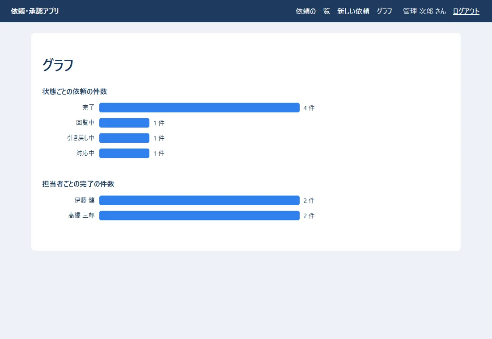
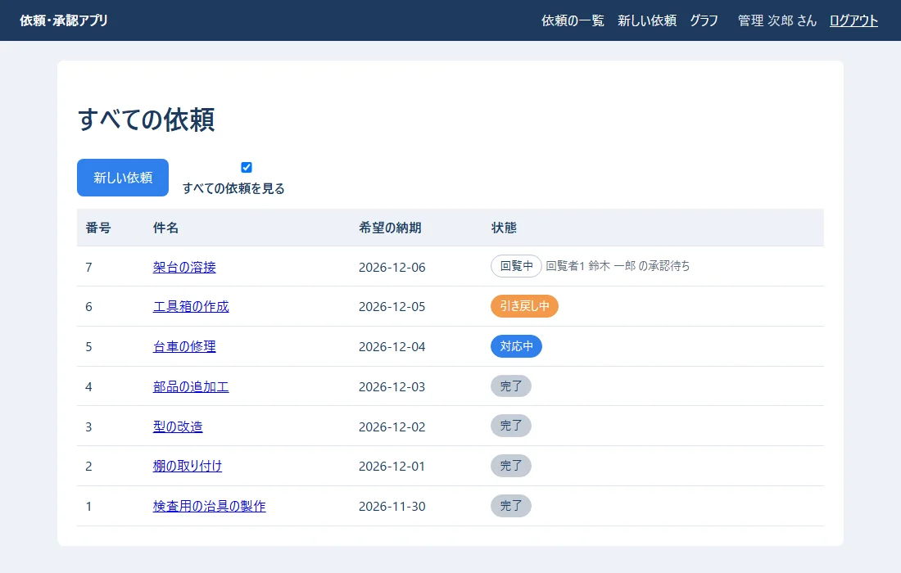
/api/stats/ が SQL の GROUP BY で行います（05 の 6 章）。画面は描くだけです。backend\demo_more.py（.\dev.ps1 shell -c "import demo_more"）で足しました。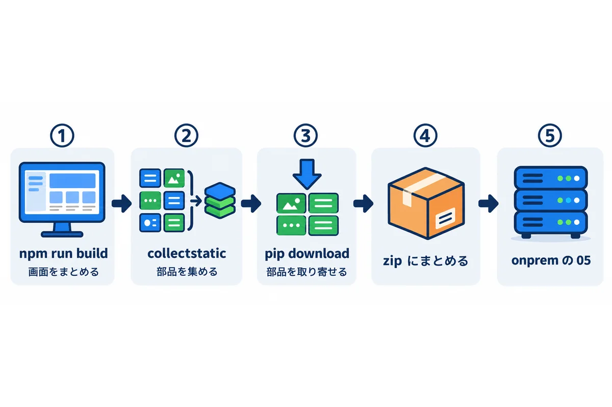
ここから先は、onprem の 05 のとおりです。この練習アプリのフォルダの名前に合わせると、次のようになります。
| 手順 | onprem の 05 | この練習アプリでは |
|---|---|---|
| React をビルドする | 7.1 の ① | frontend\ で npm run build |
| 部品を集める | 7.1 の ② | backend\ で .\dev.ps1 collectstatic --noinput |
| Python の部品を取り寄せる | 7.2 | backend\requirements.txt から、--platform win_amd64 --python-version 3.14 で |
| zip にまとめる | 7.3 | backend\ の中身（.venv・dev.env・media・sent_mail は入れない）＋ wheelhouse |
| サーバーに置き、サービスにする | 9 章 | WinSW の XML の環境変数は、前編の 3 章の表のとおり |
| テーブルを作る | 9.5 | .\manage.ps1 migrate |
| 社員を取り込む | — | .\manage.ps1 import_employees 社員.csv（前編の 9 章） |
| 毎朝の通知 | 12.1 | タスク スケジューラに manage.ps1 send_daily_reminders |
seed_demo・demo_flow.py・demo_more.pyは、開発用のパソコンだけで使います。seed_demoは、DEBUGがtrueでないと動かない作りにしてあります。
| 症状 | 原因 | 直し方 |
|---|---|---|
| 開発中、画面は出るが、API が 404 か HTML を返す | Django の開発用のサーバーを動かしていない／proxy の設定が無い |
窓 1 で .\dev.ps1 runserver。vite.config.ts の proxy |
| ログインで 403 | CSRF の札が無い（/api/csrf/ を呼ぶ前に送った） |
App の最初に api.csrf() を呼ぶ |
| ビルドした後、画面が真っ白 | base: "/static/" が無い／collectstatic をしていない |
1.2・onprem の 05 の 15 章 |
| ビルドした後、画面が古いまま | npm run build の後に collectstatic をしていない |
.\dev_serve.ps1（中で collectstatic する）か、手で collectstatic |
TemplateDoesNotExist: index.html |
ビルドしていない（frontend_dist が無い） |
npm run build |
| 回覧者の検索が出ない | ログインしていない・検索の文字に合う人がいない | 空のまま待つと、全員から 5 人が出る |
| 添付で「ファイルの中身が、拡張子と合いません」 | 名前だけ変えたファイル | 前編の 7 章 |
| 詳細で、押したはずのボタンが「できません」 | ほかの人が先に状態を変えた（引き戻した、など） | 画面を読み直す。決めるのはサーバー |
| 60 分たっていないのにログインの画面に戻る | ブラウザのクッキーを消した・SECRET_KEY を変えた（セッションはデータベースにあるので、サーバーの再起動だけでは切れない） |
SECRET_KEY は、漏れたとき以外は変えない（変えると全員のログインが切れる） |
stats で TruncMonth("created_at") を使って数える）。| 用語 | 短い説明 | 章 |
|---|---|---|
| proxy（Vite） | 開発中に、API のお願いを Django へ回す設定 | 1 |
| dev_serve.ps1 | 会社のサーバーと同じ形（waitress）で手元で動かす道具 | 1.2 |
| api.ts | サーバーとの窓口を集めたファイル | 3 |
| ApiError | API が断ったときのエラー | 3 |
| ensure_csrf_cookie | CSRF の札をクッキーで渡す仕組み | 3 |
| re_path（すべての URL） | API など以外は React の画面を返す | 3 |
| ApproverPicker | 回覧者を探して選ぶ部品 | 5 |
| SVG の棒グラフ | 部品を使わずに描いたグラフ | 7 |